TAKEDA PHARMACEUTICALS
CAMPUS APP

Please note: these images are lower resolution, as they were the only assets I could retrieve after the project's completion. The original high-resolution files were no longer accessible at the time. My apologies for the poor quality images.
INTRODUCTION
Takeda introduced Campus App to help employees navigate the shift to hybrid working. The tool existed to help people reserve spaces, find colleagues, and stay connected to campus life. But the real challenge was deeper: how do you drive adoption for a tool most of your employees don't even know exists?
I was brought in to answer that question.
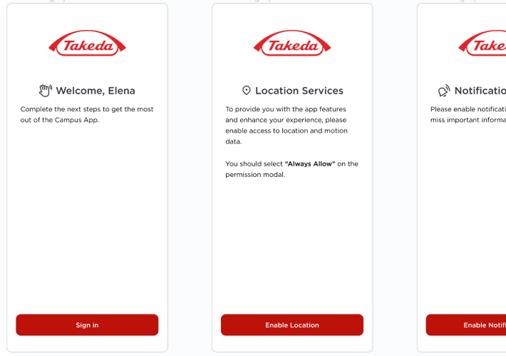
EXECUTIVE SUMMARY
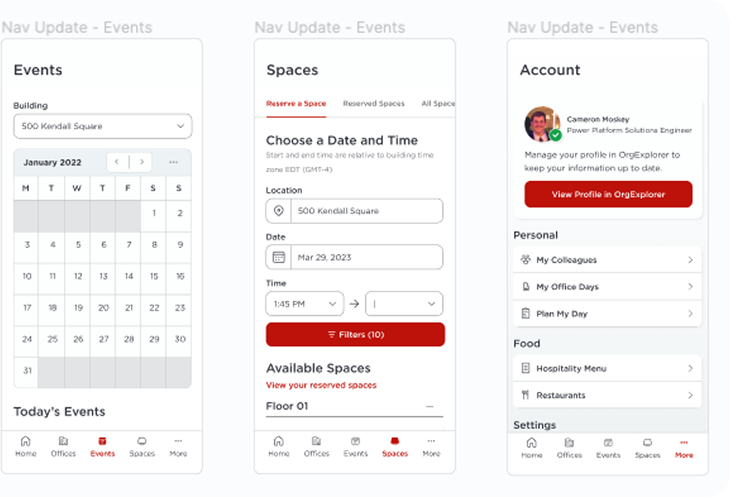
This engagement gave me the opportunity to operate across strategy, research, and design simultaneously while proving the tangible ROI of a research-driven approach.
My work spanned the full UCD lifecycle, from stakeholder and user interviews to heuristic evaluations, usability studies, and end-to-end design for both the native iOS mobile and desktop applications. I facilitated Goal Tree Mapping workshops to connect product decisions to business objectives, and applied both qualitative and quantitative research methods to build a clear, evidence-based picture of what users actually needed.
The results were significant. Within one month of launch, the new reservation flow doubled the conversion rate organically with no marketing support. Within seven months, utilization had grown by 1,511% with a 50% conversion rate. Takeda invested roughly $6,000, approximately 1% of the $600K product budget, in research that directly drove those outcomes.
Core Disciplines: UX Strategy, Qualitative and Quantitative Research, Heuristic Evaluation, Design Systems, Native iOS Design, Desktop Design
LEARN
Stakeholder Interviews
Before touching a single wireframe, I sat down with key stakeholders to understand the product from their perspective. What I found was telling: no documented UX research existed, design decisions had been made largely on assumptions, and the product was intended to serve upward of 25,000 employees. Surfacing these gaps early allowed us to align on shared goals, get ahead of conflicts, and reduce the risk of scope creep before it had a chance to take hold.
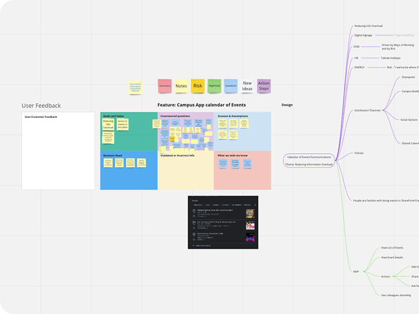
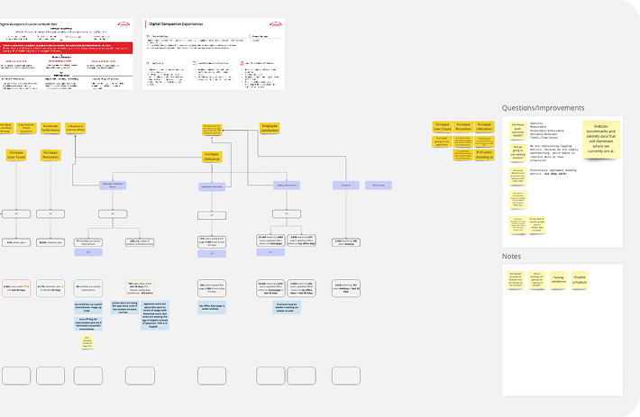
Goal Tree Mapping & User Interviews
I facilitated a Goal Tree Mapping session to connect the product's objectives to Takeda's higher-level business goals. By the end we had defined benchmark data, identified leading and lagging metrics, and gave every stakeholder a shared language for measuring success.
The user interviews reframed how the team thought about the product. Most primary users had no idea Campus App existed. Those who did were frustrated by the number of fragmented tools they were already managing. They wanted one place to handle scheduling, events, and reservations. Secondary users, primarily executives and executive assistants, needed visibility into campus utilization at a higher level. These findings gave us a clear and evidence-based foundation to build from.
Process Enhancement & UI Assessment
I recommended adopting a Tri-track Agile process to allow research, design, and development to move in parallel without blocking each other. I also conducted a heuristic evaluation using the NNGroup Ten Usability Heuristics and Abby Covert's IA Heuristics to identify quick wins and systemic issues before moving into design.
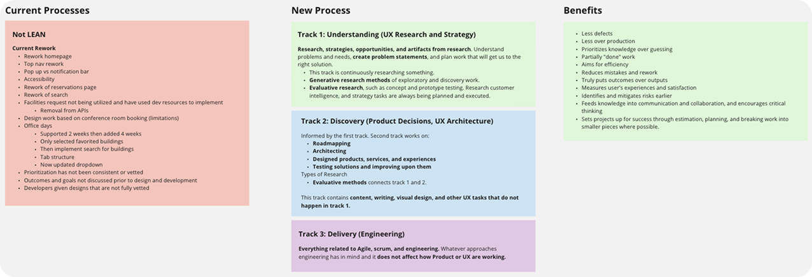
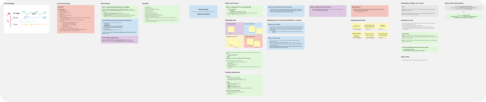
BUILD
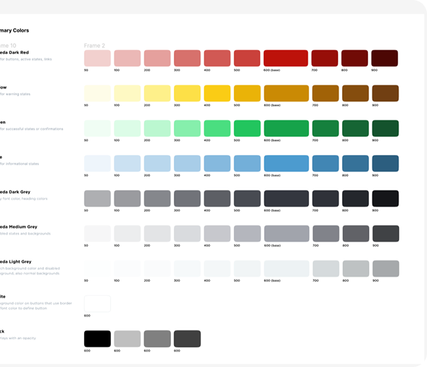
Design System
The heuristic evaluation revealed a lack of consistency across the UI that was slowing the team down and creating a fragmented experience for users. I built a design system to solve both problems at once, creating a shared language between design and development that improved consistency and accelerated speed to production. We tracked speed to production before and after implementation to measure its impact.
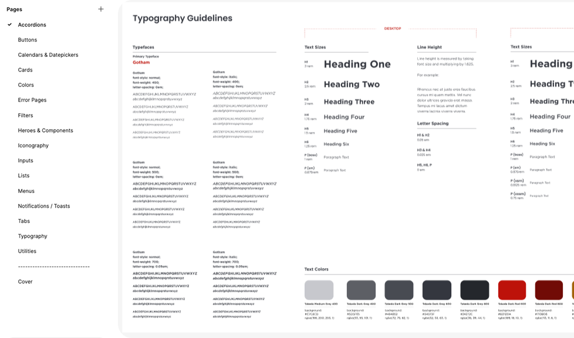
Mobile & Desktop Application
Every screen was grounded in research. The mobile application was designed for individual users reserving spaces and navigating campus intuitively, while the desktop application served the visibility needs of executives and executive assistants at a higher level. Maintaining consistency across both platforms while accommodating different use cases was one of the more interesting design challenges of the engagement.
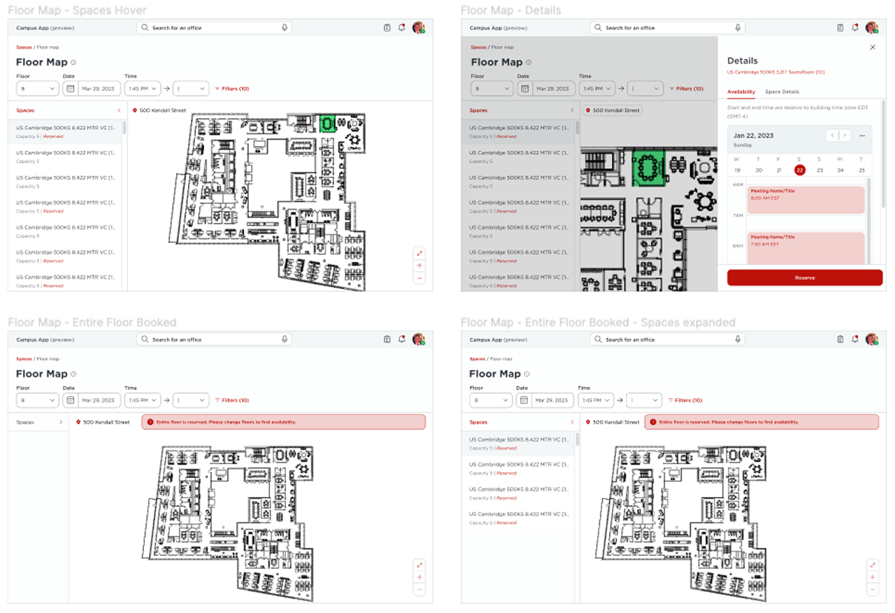
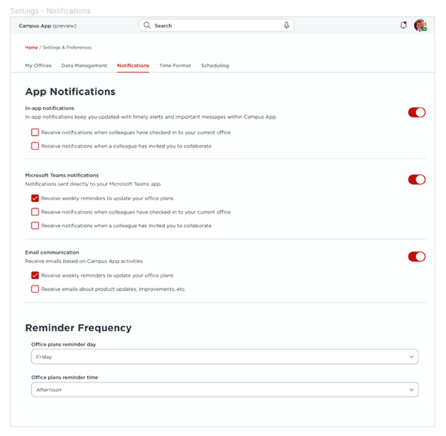
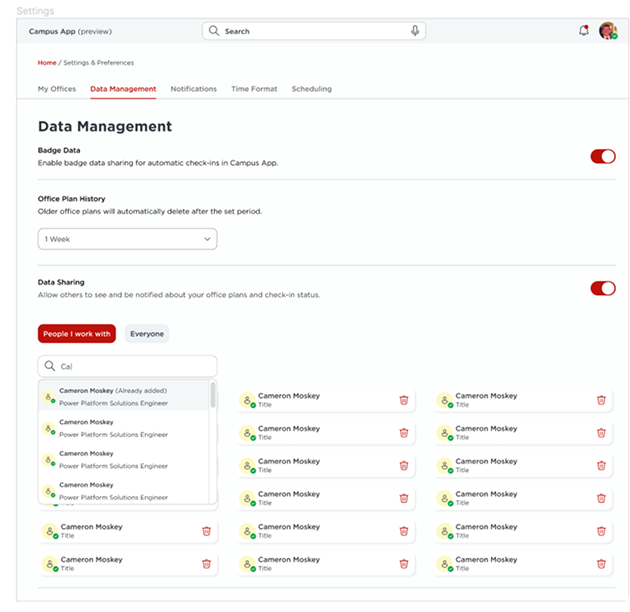
TEST
Moderated Usability Studies
I facilitated an in-person moderated usability session that surfaced 12 distinct areas of improvement, ranging from flexible time input and Outlook sync visibility to capacity warnings and Condeco integration. Several of these were core flow issues that, left unaddressed, would have meaningfully undermined adoption from day one.
Catching these before launch wasn't just good UX practice. It was risk mitigation. Every problem resolved in the testing phase is a problem that won't surface after release, when the cost of fixing it is significantly higher.
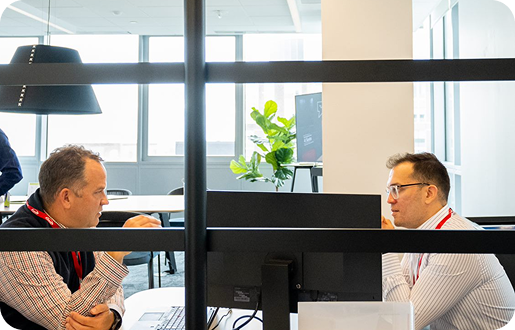
ITERATE
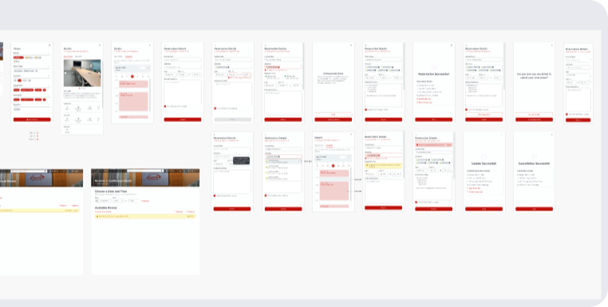
Refining the Experience & The Numbers
Each of the 12 usability findings was evaluated and addressed, with every decision grounded in what users told us rather than assumptions. Some required minor adjustments. Others required rethinking flows entirely.
Prior to launch, Campus App recorded 95 monthly reservations at a 13% conversion rate. Within one month of the new reservation flow going live, utilization increased by 361% and conversion climbed by 34%. Within seven months, utilization had grown by 1,511% with a 50% conversion rate, all of it organic with no major marketing campaigns behind it.
CLOSING
Changing Expectations
Campus App had all the ingredients of something great. What it lacked was a research foundation. Watching a skeptical stakeholder look at the post-launch analytics and say, without prompting, that they finally understood why UX research mattered was one of the most rewarding moments of my career.
The numbers are compelling. But that shift in mindset is what actually moves organizations forward.
One percent of a budget. A 1,511% return in utilization. No marketing spend. That is what research done well looks like.